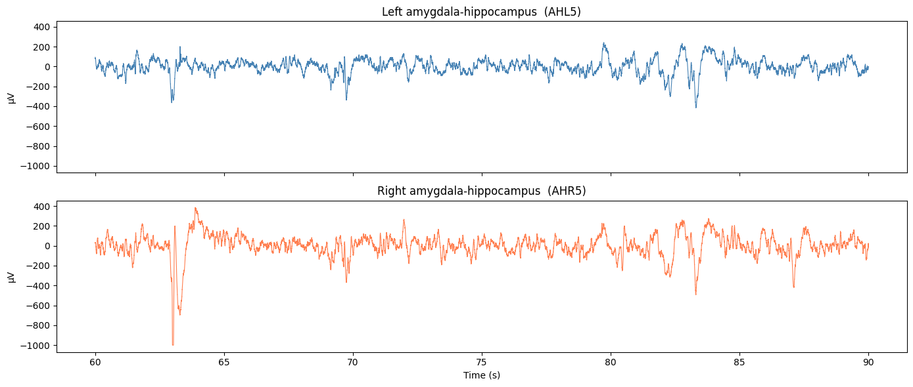
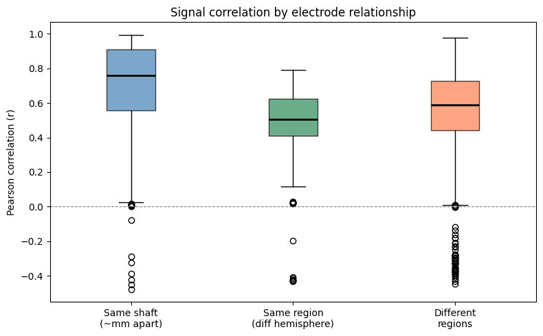

Electrode localisation#
What Do We Know About Electrode Locations?
In scalp EEG, every electrode sits in a known, standardised position. In iEEG, electrodes are placed individually by a neurosurgeon — which means localisation is both more important and much harder to obtain.
This notebook covers:
Why electrode localisation is hard in clinical iEEG
What information we do have: the
_channels.tsvfileDecoding anatomy from channel names
Using channel metadata for bad-channel detection
Comparing signals between brain regions
Why don’t we have electrode coordinates?#
In research iEEG studies, electrode positions are usually obtained by:
Taking a post-implant CT scan
Co-registering the CT with a pre-implant MRI
Automatically or manually localising each contact in MNI space
This pipeline requires extra software (e.g. Freesurfer, MNE, iELVis), takes hours per patient, and is not always shared alongside the raw data in public datasets.
The dataset we are using does not include an _electrodes.tsv with 3D coordinates — which is common, especially for clinical datasets. What we do have is a _channels.tsv, which contains metadata about each channel: its name, type, and quality status.
As we will see, channel names alone encode a surprising amount of anatomical information.
!pip install mne
from google.colab import drive
drive.mount('/content/drive')
Requirement already satisfied: mne in /usr/local/lib/python3.12/dist-packages (1.12.1)
Requirement already satisfied: decorator>=5.1 in /usr/local/lib/python3.12/dist-packages (from mne) (5.2.1)
Requirement already satisfied: jinja2>=3.1 in /usr/local/lib/python3.12/dist-packages (from mne) (3.1.6)
Requirement already satisfied: lazy-loader>=0.3 in /usr/local/lib/python3.12/dist-packages (from mne) (0.5)
Requirement already satisfied: matplotlib>=3.8 in /usr/local/lib/python3.12/dist-packages (from mne) (3.10.0)
Requirement already satisfied: numpy<3,>=1.26 in /usr/local/lib/python3.12/dist-packages (from mne) (2.0.2)
Requirement already satisfied: packaging in /usr/local/lib/python3.12/dist-packages (from mne) (26.1)
Requirement already satisfied: pooch>=1.5 in /usr/local/lib/python3.12/dist-packages (from mne) (1.9.0)
Requirement already satisfied: scipy>=1.13 in /usr/local/lib/python3.12/dist-packages (from mne) (1.16.3)
Requirement already satisfied: tqdm>=4.66 in /usr/local/lib/python3.12/dist-packages (from mne) (4.67.3)
Requirement already satisfied: MarkupSafe>=2.0 in /usr/local/lib/python3.12/dist-packages (from jinja2>=3.1->mne) (3.0.3)
Requirement already satisfied: contourpy>=1.0.1 in /usr/local/lib/python3.12/dist-packages (from matplotlib>=3.8->mne) (1.3.3)
Requirement already satisfied: cycler>=0.10 in /usr/local/lib/python3.12/dist-packages (from matplotlib>=3.8->mne) (0.12.1)
Requirement already satisfied: fonttools>=4.22.0 in /usr/local/lib/python3.12/dist-packages (from matplotlib>=3.8->mne) (4.62.1)
Requirement already satisfied: kiwisolver>=1.3.1 in /usr/local/lib/python3.12/dist-packages (from matplotlib>=3.8->mne) (1.5.0)
Requirement already satisfied: pillow>=8 in /usr/local/lib/python3.12/dist-packages (from matplotlib>=3.8->mne) (11.3.0)
Requirement already satisfied: pyparsing>=2.3.1 in /usr/local/lib/python3.12/dist-packages (from matplotlib>=3.8->mne) (3.3.2)
Requirement already satisfied: python-dateutil>=2.7 in /usr/local/lib/python3.12/dist-packages (from matplotlib>=3.8->mne) (2.9.0.post0)
Requirement already satisfied: platformdirs>=2.5.0 in /usr/local/lib/python3.12/dist-packages (from pooch>=1.5->mne) (4.9.6)
Requirement already satisfied: requests>=2.19.0 in /usr/local/lib/python3.12/dist-packages (from pooch>=1.5->mne) (2.32.4)
Requirement already satisfied: six>=1.5 in /usr/local/lib/python3.12/dist-packages (from python-dateutil>=2.7->matplotlib>=3.8->mne) (1.17.0)
Requirement already satisfied: charset_normalizer<4,>=2 in /usr/local/lib/python3.12/dist-packages (from requests>=2.19.0->pooch>=1.5->mne) (3.4.7)
Requirement already satisfied: idna<4,>=2.5 in /usr/local/lib/python3.12/dist-packages (from requests>=2.19.0->pooch>=1.5->mne) (3.13)
Requirement already satisfied: urllib3<3,>=1.21.1 in /usr/local/lib/python3.12/dist-packages (from requests>=2.19.0->pooch>=1.5->mne) (2.5.0)
Requirement already satisfied: certifi>=2017.4.17 in /usr/local/lib/python3.12/dist-packages (from requests>=2.19.0->pooch>=1.5->mne) (2026.4.22)
Mounted at /content/drive
import mne
import numpy as np
import pandas as pd
import matplotlib.pyplot as plt
from pathlib import Path
import re
from itertools import combinations
homepath = '/content/drive/MyDrive/iEEG_course_UCL'
bids_root = Path(homepath) / 'ds003498'
ieeg_dir = bids_root / 'sub-02' / 'ses-interictalsleep' / 'ieeg'
raw = mne.io.read_raw_brainvision(
ieeg_dir / 'sub-02_ses-interictalsleep_run-01_ieeg.vhdr',
preload=True, verbose=False)
print(f"Loaded {len(raw.ch_names)} channels, {raw.times[-1]:.0f} seconds")
Loaded 64 channels, 300 seconds
The channels.tsv file#
Every BIDS iEEG dataset includes a _channels.tsv file with one row per channel. Let’s read it and see what we have.
channels_file = ieeg_dir / 'sub-02_ses-interictalsleep_run-01_channels.tsv'
channels = pd.read_csv(channels_file, sep='\t')
print(f"Columns: {list(channels.columns)}")
print(f"Total channels: {len(channels)}\n")
print(channels.head(10))
Columns: ['name', 'type', 'units', 'low_cutoff', 'high_cutoff', 'description', 'sampling_frequency', 'status', 'status_description']
Total channels: 64
name type units low_cutoff high_cutoff description \
0 AHL1 ECOG V 0.0 1000.0 Electrocorticography
1 AHL2 ECOG V 0.0 1000.0 Electrocorticography
2 AHL3 ECOG V 0.0 1000.0 Electrocorticography
3 AHL4 ECOG V 0.0 1000.0 Electrocorticography
4 AHL5 ECOG V 0.0 1000.0 Electrocorticography
5 AHL6 ECOG V 0.0 1000.0 Electrocorticography
6 AHL7 ECOG V 0.0 1000.0 Electrocorticography
7 AHL8 ECOG V 0.0 1000.0 Electrocorticography
8 AHR1 ECOG V 0.0 1000.0 Electrocorticography
9 AHR2 ECOG V 0.0 1000.0 Electrocorticography
sampling_frequency status status_description
0 2000.0 good NaN
1 2000.0 good NaN
2 2000.0 good NaN
3 2000.0 good NaN
4 2000.0 good NaN
5 2000.0 good NaN
6 2000.0 good NaN
7 2000.0 good NaN
8 2000.0 good NaN
9 2000.0 good NaN
# Channel quality and type summary
print("Status counts:")
print(channels['status'].value_counts())
print("\nChannel type counts:")
print(channels['type'].value_counts())
Status counts:
status
good 64
Name: count, dtype: int64
Channel type counts:
type
ECOG 64
Name: count, dtype: int64
Using channel status for bad-channel detection#
In Notebook 2, we detected bad channels using signal variance — a reasonable heuristic, but a blunt instrument. The _channels.tsv status column is filled in by the clinical team or dataset curators, marking channels that were known to be noisy or broken at the time of recording.
This is more reliable than any automated approach because it can incorporate information we cannot compute from the signal alone — for example, an electrode outside the brain, or a known hardware fault. We should always use this information first.
# Mark bad channels from the status column
bad_from_tsv = channels[channels['status'] != 'good']['name'].tolist()
print(f"Bad channels from channels.tsv: {bad_from_tsv}")
raw.info['bads'] = bad_from_tsv
good_chs = [ch for ch in raw.ch_names if ch not in raw.info['bads']]
print(f"Good channels remaining: {len(good_chs)}")
Bad channels from channels.tsv: []
Good channels remaining: 64
Decoding anatomy from channel names#
Without 3D coordinates, the channel name is often our best anatomical clue. iEEG channel names follow a consistent convention: a prefix identifying the electrode shaft, followed by a number identifying the contact on that shaft.
For example, AHL1 through AHL8 are contacts 1–8 on shaft AHL. The shaft label is chosen by the surgical team and encodes the target brain region and hemisphere:
Prefix example |
Likely meaning |
|---|---|
|
Amygdala-Hippocampus Left |
|
Amygdala-Hippocampus Right |
|
Amygdala Left |
|
Hippocampus Left / Right |
|
Frontal Left / Right |
|
Temporal Left / Right |
These are conventions, not standards — always check the dataset paper. But even without documentation, extracting the shaft prefix gives us a useful anatomical proxy.
# Extract shaft prefix: letters before the trailing digit(s)
channels['shaft'] = channels['name'].apply(lambda n: re.sub(r'\d+$', '', n))
print("Electrode shafts and contacts:")
for shaft, grp in channels.groupby('shaft'):
contacts = grp['name'].tolist()
print(f" {shaft:6s} ({len(contacts)} contacts): {contacts}")
Electrode shafts and contacts:
AHL (8 contacts): ['AHL1', 'AHL2', 'AHL3', 'AHL4', 'AHL5', 'AHL6', 'AHL7', 'AHL8']
AHR (8 contacts): ['AHR1', 'AHR2', 'AHR3', 'AHR4', 'AHR5', 'AHR6', 'AHR7', 'AHR8']
AL (8 contacts): ['AL1', 'AL2', 'AL3', 'AL4', 'AL5', 'AL6', 'AL7', 'AL8']
AR (8 contacts): ['AR1', 'AR2', 'AR3', 'AR4', 'AR5', 'AR6', 'AR7', 'AR8']
ECL (8 contacts): ['ECL1', 'ECL2', 'ECL3', 'ECL4', 'ECL5', 'ECL6', 'ECL7', 'ECL8']
ECR (8 contacts): ['ECR1', 'ECR2', 'ECR3', 'ECR4', 'ECR5', 'ECR6', 'ECR7', 'ECR8']
PHL (8 contacts): ['PHL1', 'PHL2', 'PHL3', 'PHL4', 'PHL5', 'PHL6', 'PHL7', 'PHL8']
PHR (8 contacts): ['PHR1', 'PHR2', 'PHR3', 'PHR4', 'PHR5', 'PHR6', 'PHR7', 'PHR8']
# Infer hemisphere and rough region from the shaft label
def parse_shaft(shaft):
s = shaft.upper()
hemisphere = 'Right' if s.endswith('R') else 'Left' if s.endswith('L') else 'Unknown'
if 'AH' in s: region = 'Amygdala-Hippocampus'
elif 'A' in s and 'H' not in s: region = 'Amygdala'
elif 'H' in s: region = 'Hippocampus'
elif 'F' in s: region = 'Frontal'
elif 'T' in s: region = 'Temporal'
elif 'P' in s: region = 'Parietal'
else: region = 'Unknown'
return region, hemisphere
channels[['region', 'hemisphere']] = channels['shaft'].apply(
lambda s: pd.Series(parse_shaft(s)))
# Summary: good channels per region
summary = (channels[channels['status'] == 'good']
.groupby(['region', 'hemisphere'])
.size()
.reset_index(name='n_channels'))
print(summary.to_string(index=False))
region hemisphere n_channels
Amygdala Left 8
Amygdala Right 8
Amygdala-Hippocampus Left 8
Amygdala-Hippocampus Right 8
Hippocampus Left 8
Hippocampus Right 8
Unknown Left 8
Unknown Right 8
Comparing signals between brain regions#
Now that we have region labels, we can do something genuinely interesting: compare iEEG signals from different brain regions. This is one of the things iEEG is uniquely good at — simultaneous recording from deep structures (hippocampus, amygdala) that are completely inaccessible to scalp EEG.
Let’s compare the left vs right amygdala-hippocampus.
# Pick one representative good channel from left and right AH
left_chs = channels[(channels['region'] == 'Amygdala-Hippocampus') &
(channels['hemisphere'] == 'Left') &
(channels['status'] == 'good')]['name'].tolist()
right_chs = channels[(channels['region'] == 'Amygdala-Hippocampus') &
(channels['hemisphere'] == 'Right') &
(channels['status'] == 'good')]['name'].tolist()
# Use a middle contact on each shaft — less likely to be at the grey/white boundary
ch_left = left_chs[len(left_chs) // 2]
ch_right = right_chs[len(right_chs) // 2]
print(f"Comparing: {ch_left} (left) vs {ch_right} (right)")
Comparing: AHL5 (left) vs AHR5 (right)
T_START, T_END = 60, 90
times = raw.times
mask = (times >= T_START) & (times <= T_END)
sig_left = raw.get_data(picks=[ch_left])[0] * 1e6
sig_right = raw.get_data(picks=[ch_right])[0] * 1e6
fig, axes = plt.subplots(2, 1, figsize=(14, 6), sharex=True, sharey=True)
axes[0].plot(times[mask], sig_left[mask], color='steelblue', lw=0.8)
axes[0].set_title(f'Left amygdala-hippocampus ({ch_left})')
axes[0].set_ylabel('µV')
axes[1].plot(times[mask], sig_right[mask], color='coral', lw=0.8)
axes[1].set_title(f'Right amygdala-hippocampus ({ch_right})')
axes[1].set_ylabel('µV')
axes[1].set_xlabel('Time (s)')
plt.tight_layout()
plt.show()
print("Do the two hemispheres look similar or different?")
print("Large shared slow waves suggest bilateral synchrony; independent patterns suggest local activity.")

Do the two hemispheres look similar or different?
Large shared slow waves suggest bilateral synchrony; independent patterns suggest local activity.
Correlation within vs between regions#
We can make this more systematic. Without coordinates, we cannot compute physical distances — but we can classify each pair of channels by their relationship:
Same shaft: contacts are physically adjacent (~3.5 mm apart)
Same region, opposite hemisphere: same target structure, but on the other side of the brain
Different regions: independent anatomical targets
We expect correlations to decrease in that order.
# 60 seconds of data for all good channels
data_60s = raw.get_data(picks=good_chs, tmin=60, tmax=120) * 1e6
ch_info = channels.set_index('name')[['shaft', 'region', 'hemisphere']]
same_shaft_corrs, same_region_corrs, diff_region_corrs = [], [], []
for i, j in combinations(range(len(good_chs)), 2):
ch_i, ch_j = good_chs[i], good_chs[j]
if ch_i not in ch_info.index or ch_j not in ch_info.index:
continue
corr = np.corrcoef(data_60s[i], data_60s[j])[0, 1]
if ch_info.loc[ch_i, 'shaft'] == ch_info.loc[ch_j, 'shaft']:
same_shaft_corrs.append(corr)
elif ch_info.loc[ch_i, 'region'] == ch_info.loc[ch_j, 'region']:
same_region_corrs.append(corr)
else:
diff_region_corrs.append(corr)
for label, corrs in [('Same shaft ', same_shaft_corrs),
('Same region ', same_region_corrs),
('Diff region ', diff_region_corrs)]:
print(f"{label} n={len(corrs):4d} mean r = {np.mean(corrs):.3f}")
Same shaft n= 224 mean r = 0.680
Same region n= 256 mean r = 0.481
Diff region n=1536 mean r = 0.555
fig, ax = plt.subplots(figsize=(8, 5))
bp = ax.boxplot([same_shaft_corrs, same_region_corrs, diff_region_corrs],
labels=['Same shaft\n(~mm apart)', 'Same region\n(diff hemisphere)', 'Different\nregions'],
patch_artist=True,
medianprops=dict(color='black', lw=2))
for patch, color in zip(bp['boxes'], ['steelblue', 'seagreen', 'coral']):
patch.set_facecolor(color)
patch.set_alpha(0.7)
ax.axhline(0, color='gray', ls='--', lw=0.8)
ax.set_ylabel('Pearson correlation (r)')
ax.set_title('Signal correlation by electrode relationship')
plt.tight_layout()
plt.show()
print("Same-shaft contacts are highly correlated — they record the same local neural population.")
print("Cross-region contacts are much less correlated — they reflect independent activity.")
/tmp/ipykernel_30610/2074287459.py:3: MatplotlibDeprecationWarning: The 'labels' parameter of boxplot() has been renamed 'tick_labels' since Matplotlib 3.9; support for the old name will be dropped in 3.11.
bp = ax.boxplot([same_shaft_corrs, same_region_corrs, diff_region_corrs],

Same-shaft contacts are highly correlated — they record the same local neural population.
Cross-region contacts are much less correlated — they reflect independent activity.
A note on electrode types in this dataset#
The type column labels all channels as ECOG. This is worth clarifying:
Term |
Meaning |
|---|---|
ECoG (grid) |
Array laid flat on the brain surface. Covers a patch of cortex. |
SEEG (depth) |
Thin probe inserted through the brain. Contacts spaced along the shaft. |
iEEG |
Umbrella term for both — any electrode inside the skull. |
Some datasets (including this one) use ECOG loosely as a synonym for iEEG. The 8-contact shaft structure in our channel names (AHL1–AHL8) strongly suggests these are SEEG depth electrodes, not surface grids. Always read the dataset paper alongside the data.
The practical consequence: SEEG contacts sample deep structures (hippocampus, amygdala, thalamus) unreachable by surface ECoG or scalp EEG. Contacts 1 and 2 on a shaft are ~3.5 mm apart; contacts 1 and 8 are ~25 mm apart and may sit in entirely different brain regions.
Summary#
We don’t have 3D electrode coordinates for this dataset — which is common in clinical iEEG. What we do have is still quite useful:
_channels.tsvstatus column: the most reliable source for bad-channel marking — use it before any automated approachChannel name conventions: shaft prefixes encode target region and hemisphere, giving rough anatomical labels without coordinates
Correlation structure: same-shaft contacts are highly correlated; cross-region contacts are not — confirming the spatial specificity of iEEG even without knowing exact positions
For proper 3D localisation in a real study, you would need post-implant CT + MRI coregistration, processed with tools like MNE, iELVis, or FieldTrip.